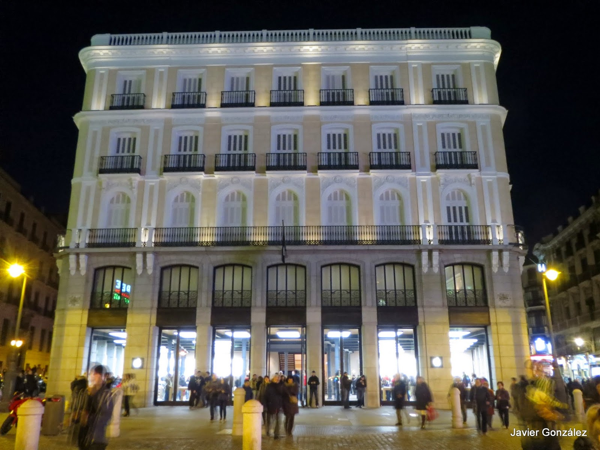

Hotel ParísEste difunto hotel ultra-lujoso existió entre los años 1864 y 2006, estando muy adelantado a su tiempo y siendo durante el primer medio siglo de su existencia la mejor y casi única opción en cuanto a hoteles de lujo en el centro de Madrid.
Fue de los primeros hoteles en tener cuartos de baño individuales, servicio de habitaciones, mesa redonda, sala de lectura, entre otras cosas.
Todo esto se veía reflejado en el precio del hotel. En sus inicios, alquilar una habitación durante un mes costaba unos 636.000 reales, mientras que el sueldo que cobraban los obreros de la época era de unos 12 reales.
El hotel hacia principios del siglo XX
En él se hospedaron clientes tales como Rubén Darío o León Trotsky. Sin embargo, su decadencia comenzó con la apertura de otros hoteles aún mejores como el famoso hotel Palace, y el hotel París jamás pudo recuperarse.
El edificio fue abandonado y luego comprado por Apple quien convirtió el hotel en una Apple Store.
 El antiguo hotel, hecho Apple Store